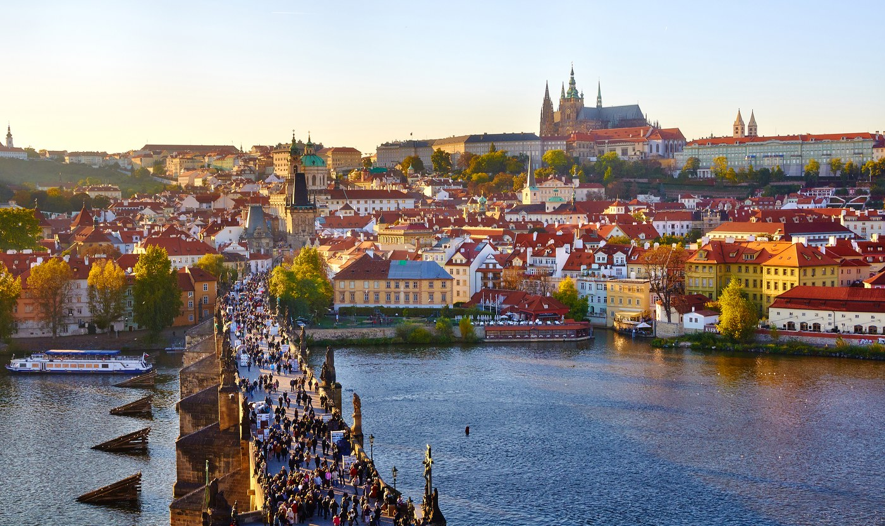
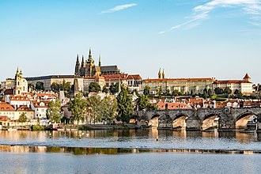
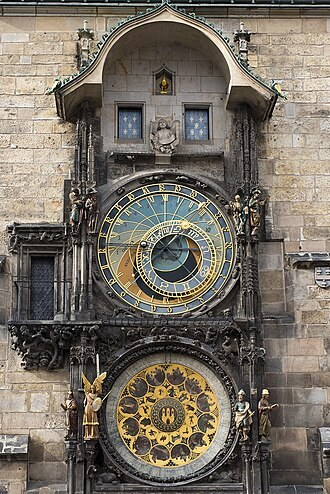
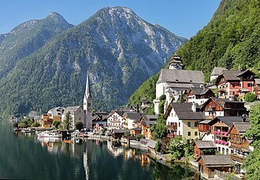
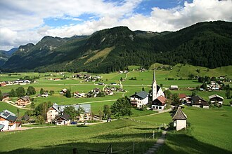
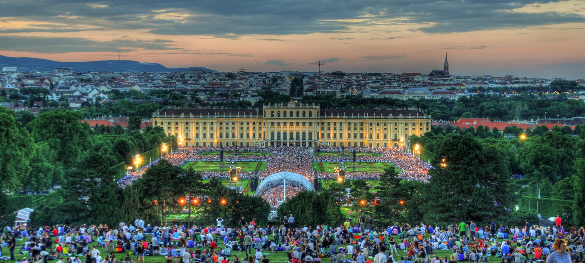
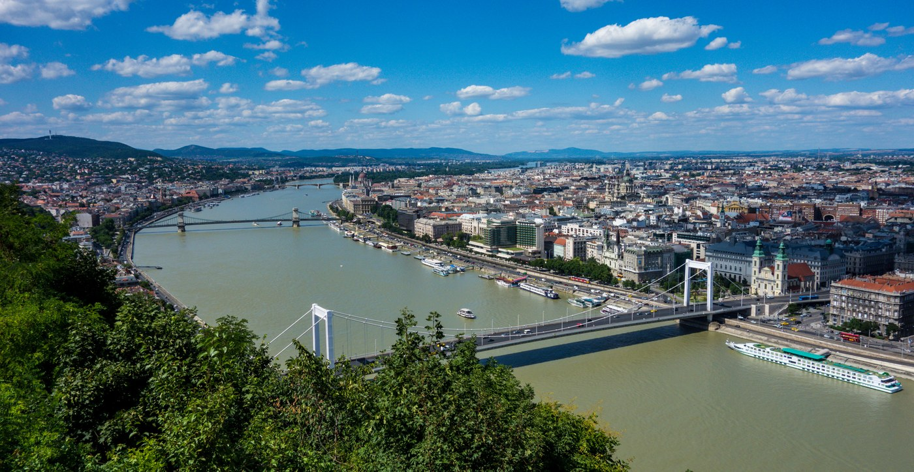

上海 -> 首尔
Korean Air KE892 · 08:50 - 11:55
上海出发，经首尔过夜转机，进入布拉格；穿过奥地利湖区与维也纳，最后在布达佩斯结束欧洲段。
Korean Air KE892 · 08:50 - 11:55
Korean Air KE969 · 11:05 - 17:05
EC 333 10:21-14:06 · IC 644 14:30-14:58 · REX 4412 15:08-16:03
查看票据R 4413 14:53-15:52 · IC 741 16:01-17:29 · REX 1653 17:36-18:37
查看票据EC 147 14:00-17:02 · R 4633 17:12-17:19
查看票据CA720 13:00-04:10 · CA1507 07:30-10:00
2026-09-25 至 2026-09-26
8 Huinbawi-ro 59beon-gil, Yeongjong-gu, Incheon
+82-32-7461700
2026-09-26 至 2026-09-29
Politickych veznu 12/913, Prague 01, Prague, Czech Republic, 11000
+420 211 159 856
2026-09-29 至 2026-10-02
Grazer Strasse 9, 4820 Bad Ischl, Austria
+43 676 7218684
2026-10-02 至 2026-10-05
3-5 Graumanngasse, Rudolfsheim-Fuenfhaus, Vienna, Austria, 1150
+43 1 4180055
2026-10-05 至 2026-10-08
Hess A. ter 1-3, Castle District Budavar, Budapest, Hungary, 1014
+36 1 889 6922

出发与转机恢复
抵达欧洲，轻量适应

城堡、小城、查理桥

老城、火药塔、市集

跨城移动，抵达后休息
国家/区域捷克 / 奥地利
已订/交通EC 333 10:21-14:06 · IC 644 14:30-14:58 · REX 4412 15:08-16:03查看票据
SchafbergBahn 与湖区

盐矿、观景台、湖边

跨城移动，维也纳落脚
国家/区域奥地利
住宿Leonardo Hotel Vienna City West
已订/交通R 4413 14:53-15:52 · IC 741 16:01-17:29 · REX 1653 17:36-18:37查看票据
美景宫、卡尔教堂、金色大厅
内城、霍夫堡、教堂线

跨城移动，城堡区夜景
佩斯城市轴线
布达城堡山
返程航班
国家/区域匈牙利 / 中国
住宿飞机上
已订/交通CA720 13:00 - 次日 04:10
回家
国家/区域中国
住宿回家
已订/交通CA1507 07:30 - 10:00
| 项目 | 建议时间 | 优先级 | 说明 |
|---|---|---|---|
| U Modre kachnicky 蓝鸭餐厅 | 9/27 午餐 | 高 | 布拉格正式餐，建议提前订。 |
| SchafbergBahn 沙夫山登山火车 | 9/30 上午 | 高 | 天气型项目，提前看天气和票。 |
| Salzwelten Hallstatt 哈尔施塔特盐矿 | 10/1 上午 | 高 | 2026-09-01 后门票开放，建议提前买。 |
| Upper Belvedere 美景宫上宫 | 10/3 09:00 | 高 | 建议买时段票。 |
| Sisi Museum 茜茜公主博物馆 | 10/4 11:30 | 中高 | 最后入场较早，别排太晚。 |
| Hungarian State Opera Tour 匈牙利国家歌剧院导览 | 10/6 13:30 或 15:00 | 中 | 英文导览固定场次。 |
| Hungarian Parliament Tour 匈牙利国会大厦导览 | 10/6 下午 | 高 | 入内必须导览，官方票源优先。 |